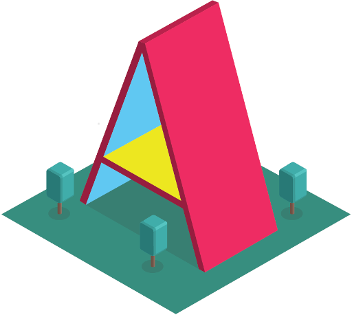
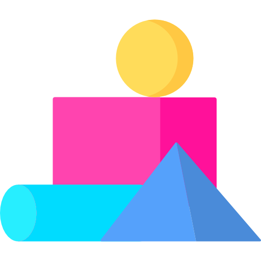
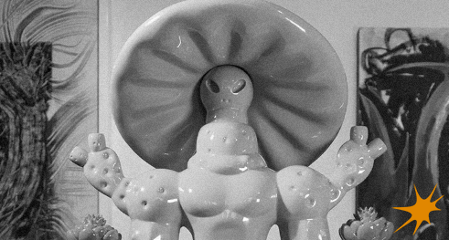
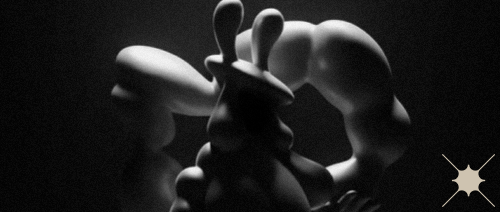
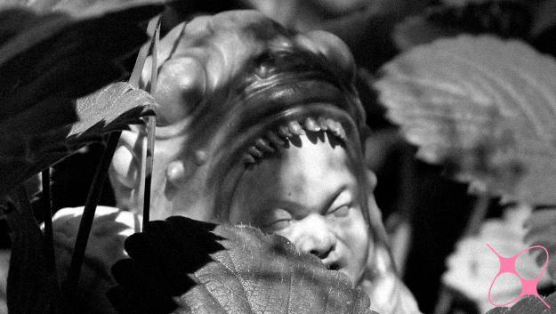

MOV STUDIOMX
Bienvenidos a MovStudioo: Museo Virtual
Te damos la bienvenida a MovStudioo, un museo virtual creado para ofrecerte una experiencia inmersiva única. En esta página, podrás explorar tres espacios web diferentes, cada uno diseñado en A-Frame, donde se presenta una imagen acompañada de su reseña artística.


A-Frame es un framework de código abierto para construir experiencias de realidad virtual (VR) directamente en el navegador web, usando principalmente HTML. Fue creado originalmente por el equipo de Mozilla.
Con A-Frame puedes crear mundos 3D, escenas interactivas o aplicaciones de realidad virtual sin necesidad de programar en lenguajes complicados como WebGL puro o Three.js directamente.
A-Frame es un framework de código abierto para construir experiencias de realidad virtual (VR) directamente en el navegador web, usando principalmente HTML. Fue creado originalmente por el equipo de Mozilla.
Con A-Frame puedes crear mundos 3D, escenas interactivas o aplicaciones de realidad virtual sin necesidad de programar en lenguajes complicados como WebGL puro o Three.js directamente.
SALA 1
Tres figuras que habitan entre la espiritualidad, la tierra y el cuidado: Jícuri Shaman, Mammillaria la sabia y Allium el Elemental. Estas piezas, más que esculturas, son símbolos vivientes de procesos internos: la lucha que florece, el amor que cuida y la medicina que nutre. Cada uno de estos personajes representa una etapa del viaje personal que todos enfrentamos con espinas, pausas, alimento y transformación. Sus formas y acabados nos invitan a observarlos con calma, mientras su esencia nos susurra lo que necesitamos escuchar.
👇 Ve al link de esta exposición.

https://sala-1-museo-virtual-a-frame.glitch.me/
SALA 2
Tres figuras que se mueven entre la sensualidad, la sátira y lo fantástico: BL03, nacido en un mundo de criaturas misteriosas; Duele Rico, el héroe improbable de un universo urbano lleno de techno y castigo; y SadoBlob, una figura provocadora que transforma el dolor en arte. Cada uno con una narrativa única y estética cuidadosamente construida, estas piezas habitan el límite entre el placer visual y el relato simbólico. Aquí se cruza lo imaginario con lo atrevido, lo sensual con lo absurdo, en una experiencia donde cada figura se vuelve espejo de pasiones ocultas y deseos inesperados.
👇 Ve al link de esta exposición.

https://sala-2-museo-virtual-a-frame.glitch.me/
SALA 3
En esta muestra convergen mundos distintos, pero igual de intensos: CURANTIS, un ser entre lo biológico y lo mecánico, marca el inicio de una saga de híbridos en conflicto. Only Sins, una pieza cargada de simbolismo y provocación, invoca eternidades rojas desde las profundidades digitales. Y CMLK Round 2, donde luchadores y monstruos colisionan en un cuadrilátero lleno de nostalgia, fuerza y cultura pop. Cada obra dialoga con sus propios mitos: entre tecnología, sensualidad y espectáculo. Aquí empieza la experiencia, lo demás… se descubre adentro.
👇 Ve al link de esta exposición.

https://sala-3-museo-virtual-a-frame.glitch.me/